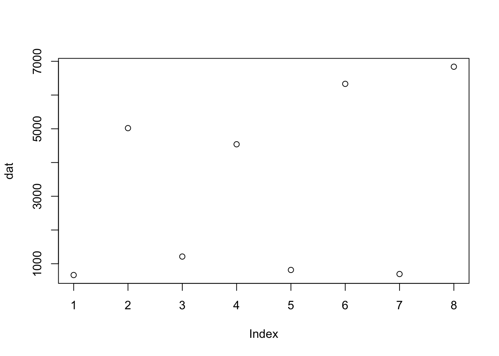
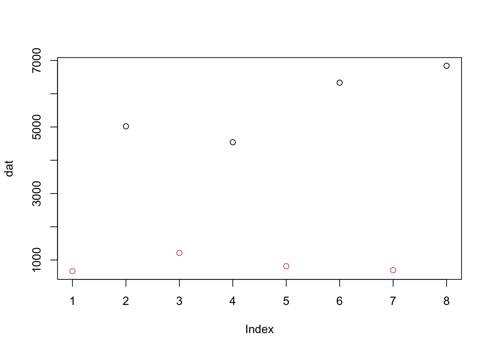

## Loading required package: airwaylibrary(SummarizedExperiment)
data(airway, package="airway")
airway## class: RangedSummarizedExperiment
## dim: 64102 8
## metadata(1): ''
## assays(1): counts
## rownames(64102): ENSG00000000003 ENSG00000000005 ... LRG_98 LRG_99
## rowData names(0):
## colnames(8): SRR1039508 SRR1039509 ... SRR1039520 SRR1039521
## colData names(9): SampleName cell ... Sample BioSampleclass() of airway? What does
the class tell you about the information stored about the features
(genes) in the dataset?class(airway)airway # it tells you
# but to get the result as a number:
nrow(airway)airway # it tells you
# but to get the result as a number:
ncol(airway)# check the names of the available assays
assayNames(airway)
# Both below are identical
assay(airway, "counts")[56, ]
assays(airway)[[1]][56, ]rownames() of airway? What do these
represent? What gene is represented by the first row of data?head(rownames(airway))
# These are Ensembl gene identifiers
# ENSG00000000003 is the identifier of the "TSPAN6" genecolData(airway)colData(airway) # and count
colData(airway)$dex # and count
table(colData(airway)$dex)table(colData(airway)$cell)
length(unique(colData(airway)$cell))rowRanges(airway) give you? What is the
length of the object? What does each element of
rowRanges(airway) contain?rowRanges(airway)
length(rowRanges(airway))
rowRanges(airway)[[1]]# get the assay data for DUSP1
dat = assay(airway, "counts")["ENSG00000120129", ]# get the assay data for DUSP1
plot(dat)
dextrt = colData(airway)$dex
plot(dat, col=dextrt)
SummarizedExperiment object. You will need to construct:
sessionInfo()## R version 4.2.0 (2022-04-22)
## Platform: x86_64-apple-darwin17.0 (64-bit)
## Running under: macOS Big Sur/Monterey 10.16
##
## Matrix products: default
## BLAS: /Library/Frameworks/R.framework/Versions/4.2/Resources/lib/libRblas.0.dylib
## LAPACK: /Library/Frameworks/R.framework/Versions/4.2/Resources/lib/libRlapack.dylib
##
## locale:
## [1] en_US.UTF-8/en_US.UTF-8/en_US.UTF-8/C/en_US.UTF-8/en_US.UTF-8
##
## attached base packages:
## [1] stats4 stats graphics grDevices utils datasets methods
## [8] base
##
## other attached packages:
## [1] airway_1.16.0 SummarizedExperiment_1.26.1
## [3] Biobase_2.56.0 GenomicRanges_1.48.0
## [5] GenomeInfoDb_1.32.0 IRanges_2.30.0
## [7] S4Vectors_0.34.0 BiocGenerics_0.42.0
## [9] MatrixGenerics_1.8.0 matrixStats_0.62.0
##
## loaded via a namespace (and not attached):
## [1] highr_0.9 bslib_0.3.1 compiler_4.2.0
## [4] jquerylib_0.1.4 XVector_0.36.0 bitops_1.0-7
## [7] tools_4.2.0 zlibbioc_1.42.0 digest_0.6.29
## [10] jsonlite_1.8.0 evaluate_0.15 lattice_0.20-45
## [13] rlang_1.0.2 Matrix_1.4-1 DelayedArray_0.22.0
## [16] cli_3.3.0 rstudioapi_0.13 yaml_2.3.5
## [19] xfun_0.30 fastmap_1.1.0 GenomeInfoDbData_1.2.8
## [22] stringr_1.4.0 knitr_1.39 sass_0.4.1
## [25] grid_4.2.0 R6_2.5.1 rmarkdown_2.14
## [28] magrittr_2.0.3 htmltools_0.5.2 stringi_1.7.6
## [31] RCurl_1.98-1.6